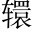

司馬錯措。○秦人。與張儀魏人。爭論於秦惠王前此句是一篇總綱。下乃更敘起也。。司馬錯欲伐蜀，張儀曰：「不如伐韓。」王曰：「請聞其說。」
對曰：「親魏善楚結好魏、楚，謀共伐韓。，下兵三川三川，河、洛、伊，韓地也。，塞還。轅、緱鉤。氏之口轅、緱氏，險道，屬河南。，當屯留之道屯留，潞州縣道，即太行羊腸阪。，魏絕南陽韓地。，楚臨南鄭河南鄭地。，秦攻新城、宜陽新城，屬河南。宜陽，韓邑。，以臨二週之郊西、東二週。，誅周主之罪周無韓為蔽，可以兵劫之。，侵楚、魏之地楚、魏無韓，益近秦，可以兵剪之。。周自知不救，九鼎寶器必出。據九鼎，按圖籍土地之圖，人民金谷之籍。，挾天子以令天下既得周鼎，乃借輔周為名，號召天下。，天下莫敢不聽，此王業也取三川得利，挾天子得名，所以為王業。○一段伐韓之利。。今夫蜀，西僻之國，而戎狄之長也，敝名作兵。勞眾不足以成名，得其地不足以為利一段伐蜀之不利。。臣聞：「爭名者於朝，爭利者於市。」今三川、周室，天下之市朝也，而王不爭焉，顧爭於戎狄，去王業遠矣總言伐韓、伐蜀相去之遠，雙結。。」
司馬錯曰：「不然只二字，推倒張儀。。臣聞之，欲富國者，務廣其地；欲強兵者，務富其民；欲王者，務博其德。三資者備，而王隨之矣先發正大之論。下乃入今事。○三資止重「富」、「強」, 「王」字陪說，故後竟不提起。。今王之地小民貧，故臣願從事於易提清伐蜀主腦。。夫蜀，西僻之國也，而戎狄之長也句有抑揚。，而有桀、紂之亂。以秦攻之，譬如使豺狼逐群羊也忽設一喻，為下「未必利」作反照。。取其地，足以廣國也頂「強」。；得其財，足以富民頂「富」。○此二句說實。；繕兵不傷眾，而彼已服矣繕，治也。。故拔一國，而天下不以為暴；利盡四作西。海，諸侯不以為貪此二句說名。。是我一舉而名實兩附其利如此。，而又有禁暴止亂之名加一句，應上桀、紂句也。○一段伐蜀之利。。今攻韓劫天子名雖攻韓，實劫天子。，劫天子，惡名也擒定大題目立論。，而未必利也，又有不義之名既未必利，徒有不義之名。，而攻天下之所不欲句。，危天下皆欲尊周，而我攻之，亦危甚矣，不但名利兩失已也。！臣請謁其故謁，白也。：周，天下之宗室也周室為天下之所宗。；韓，周之與國也二句是「攻韓劫天子」註腳。。周自知失九鼎，韓自知亡三川兩「自知」應上一「自知」。，則必將二國併力合謀，以因乎齊、趙，而求解乎楚、魏秦既親魏善楚，難以離間，故必因乎齊、趙而求解之。。以鼎與楚，以地與魏，王不能禁將魏、楚與國勢必轉而為秦敵矣。。此臣所謂「危」一段伐韓之不利。，不如伐蜀之完也完，猶言萬全。○繳一句，意足。。」
惠王曰：「善！寡人聽子。」卒起兵伐蜀。十月取之，遂定蜀。蜀主更號為侯，而使陳莊相蜀。蜀既屬，秦益強富厚，輕諸侯結完富強本旨。。
周雖衰弱，名器猶存，張儀首倡破周之說，實是喪心。司馬錯建議伐蜀，句句駁倒張儀。生當戰國，而能顧惜大義，誠超於人一等。秦王平日信任張儀，而此策獨從錯，可謂識時務之要。